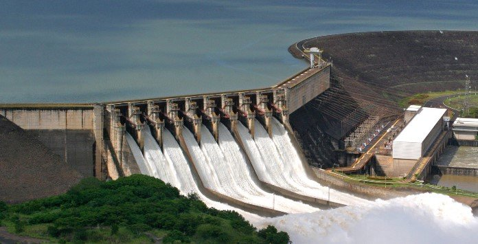

Hidraulica
É obtida pelo aproveitamento do potencial gravitacional da água corrente e de quedas d’água. Quando é usada para gerar eletricidade passa a ser chamada de energia hidrelétrica.
A hidreletricidade é a principal forma de energia utilizada no Brasil, e a terceira no mundo. Embora se utilize de uma fonte renovável e seja considerada mais limpa e barata comparativamente às demais, a construção das hidrelétricas é responsável por uma série de impactos ambientais e sociais que podem transformar os ecossistemas locais bem como a vida das populações que vivem nas suas proximidades.

Esta imagem foi retirada do site : https://www.portal-energia.com/wp-content/uploadsthumbs/central-hidroeletrica.jpg
Vantagens
- Utiliza uma fonte limpa e renovável: a água;
- Não emite dióxido de carbono;
- É uma fonte barata de eletricidade;
- Reforçam a economia com o turismo;
- Gera um custo relativamente baixo para o consumidor final;
Desvantagens
- A construção das hidrelétricas costuma prejudicar a flora e a fauna das áreas alagadas;
- Desmatamento;
- Mudanças climáticas;
- Alteração do curso e do nível natural dos rios;